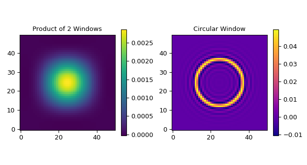

firwin_2d#
- scipy.signal.firwin_2d(hsize, window, *, fc=None, fs=2, circular=False, pass_zero=True, scale=True)[source]#
2D FIR filter design using the window method.
This function computes the coefficients of a 2D finite impulse response filter. The filter is separable with linear phase; it will be designed as a product of two 1D filters with dimensions defined by hsize. Additionally, it can create approximately circularly symmetric 2-D windows.
- Parameters:
- hsizetuple or list of length 2
Lengths of the filter in each dimension. hsize[0] specifies the number of coefficients in the row direction and hsize[1] specifies the number of coefficients in the column direction.
- windowtuple or list of length 2 or str
Desired window to use for each 1D filter or a single window type for creating circularly symmetric 2-D windows. Each element should be a string or tuple of string and parameter values. The generated windows will be symmetric, unless a suffix
'_periodic'is appended to the window name (e.g.,'hamming_periodic'). Consultget_windowfor a list of windows and required parameters.- fcfloat or 1-D array_like, optional
Cutoff frequency of the filter in the same units as fs. This defines the frequency at which the filter’s gain drops to approximately -6 dB (half power) in a low-pass or high-pass filter. For multi-band filters, fc can be an array of cutoff frequencies (i.e., band edges) in the range [0, fs/2], with each band specified in pairs. Required if circular is False.
- fsfloat, optional
The sampling frequency of the signal. Default is 2.
- circularbool, optional
Whether to create a circularly symmetric 2-D window. Default is
False.- pass_zero{True, False, ‘bandpass’, ‘lowpass’, ‘highpass’, ‘bandstop’}, optional
This parameter is directly passed to
firwinfor each scalar frequency axis. Hence, ifTrue, the DC gain, i.e., the gain at frequency (0, 0), is 1. IfFalse, the DC gain is 0 at frequency (0, 0) if circular isTrue. If circular isFalsethe frequencies (0, f1) and (f0, 0) will have gain 0. It can also be a string argument for the desired filter type (equivalent tobtypein IIR design functions).- scalebool, optional
This parameter is directly passed to
firwinfor each scalar frequency axis. Set toTrueto scale the coefficients so that the frequency response is exactly unity at a certain frequency on one frequency axis. That frequency is either:0 (DC) if the first passband starts at 0 (i.e. pass_zero is
True)fs/2 (the Nyquist frequency) if the first passband ends at fs/2 (i.e., the filter is a single band highpass filter); center of first passband otherwise
- Returns:
- filter_2d(hsize[0], hsize[1]) ndarray
Coefficients of 2D FIR filter.
- Raises:
- ValueError
If hsize and window are not 2-element tuples or lists.
If cutoff is None when circular is True.
If cutoff is outside the range [0, fs/2] and circular is
False.If any of the elements in window are not recognized.
- RuntimeError
If
firwinfails to converge when designing the filter.
See also
firwinFIR filter design using the window method for 1d arrays.
get_windowReturn a window of a given length and type.
Examples
Generate a 5x5 low-pass filter with cutoff frequency 0.1:
>>> import numpy as np >>> from scipy.signal import get_window >>> from scipy.signal import firwin_2d >>> hsize = (5, 5) >>> window = (("kaiser", 5.0), ("kaiser", 5.0)) >>> fc = 0.1 >>> filter_2d = firwin_2d(hsize, window, fc=fc) >>> filter_2d array([[0.00025366, 0.00401662, 0.00738617, 0.00401662, 0.00025366], [0.00401662, 0.06360159, 0.11695714, 0.06360159, 0.00401662], [0.00738617, 0.11695714, 0.21507283, 0.11695714, 0.00738617], [0.00401662, 0.06360159, 0.11695714, 0.06360159, 0.00401662], [0.00025366, 0.00401662, 0.00738617, 0.00401662, 0.00025366]])
Generate a circularly symmetric 5x5 low-pass filter with Hamming window:
>>> filter_2d = firwin_2d((5, 5), 'hamming', fc=fc, circular=True) >>> filter_2d array([[-0.00020354, -0.00020354, -0.00020354, -0.00020354, -0.00020354], [-0.00020354, 0.01506844, 0.09907658, 0.01506844, -0.00020354], [-0.00020354, 0.09907658, -0.00020354, 0.09907658, -0.00020354], [-0.00020354, 0.01506844, 0.09907658, 0.01506844, -0.00020354], [-0.00020354, -0.00020354, -0.00020354, -0.00020354, -0.00020354]])
Generate Plots comparing the product of two 1d filters with a circular symmetric filter:
>>> import matplotlib.pyplot as plt >>> hsize, fc = (50, 50), 0.05 >>> window = (("kaiser", 5.0), ("kaiser", 5.0)) >>> filter0_2d = firwin_2d(hsize, window, fc=fc) >>> filter1_2d = firwin_2d((50, 50), 'hamming', fc=fc, circular=True) ... >>> fg, (ax0, ax1) = plt.subplots(1, 2, tight_layout=True, figsize=(6.5, 3.5)) >>> ax0.set_title("Product of 2 Windows") >>> im0 = ax0.imshow(filter0_2d, cmap='viridis', origin='lower', aspect='equal') >>> fg.colorbar(im0, ax=ax0, shrink=0.7) >>> ax1.set_title("Circular Window") >>> im1 = ax1.imshow(filter1_2d, cmap='plasma', origin='lower', aspect='equal') >>> fg.colorbar(im1, ax=ax1, shrink=0.7) >>> plt.show()
